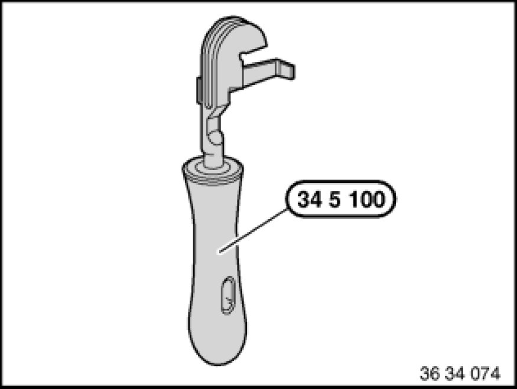

Replacing All Brake Pipes
34 32 861 - Replacing all brake pipes

Special tools required:
- 34 5 100 34 5 100 Bending Fixture

Note:
The brake lines are only supplied in the straight version and correct length with connecting nipple.
Read and comply with General Information Service and Repair.
After completing work, bleed brake system Bleeding Brake System with DSC.
Observe safety instructions on raising the vehicle 00 .. ... Lifting Vehicle With A Lifting Platform.

New brake lines are bent into shape with bending tool 34 5 100 34 5 100 Bending Fixture.
Removed brake pipes can be used as templates for bending.
Important!
- Protective coating of brake line must not be damaged during bending.
- Do not kink or bend back brake lines.
- Watch distances to rigid and movable vehicle parts. Brake lines may not make contact or rub.
- Tighten down brake line couplings with torque wrench.
Installation:
Tightening torque 34 32 1AZ 34 32 Brake Lines.